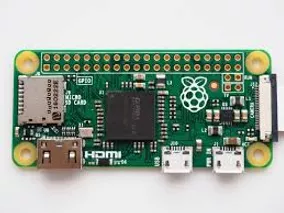

An Introduction to Raspberry Pi
21 Jan, 2018
The Raspberry Pi Foundation works to put the power of digital making into the hands of people all over the world and aims to promote the teaching of basic computer science in schools and developing countries. So people are capable of understanding and shaping increasingly digital world, and able to solve the problems that matter to them.
To fulfill this foundation developed a low-cost, high-performance, a small single board computer stamped with chips and input/output (I/O) connectors, named “RASPBERRY PI” that people can use to learn, solve problems and have fun. It also developed free resources to help people learn about computing and how to make things with computers, and train educators who can guide other people to learn. It also captured the curiosity of tech enthusiasts all over the world because of various uses, purposes and capabilities of this credit card sized computer.
Several generations of Raspberry Pi have been released. The first generation christened Raspberry Pi 1 was released in February 2012 with its basic Model A and a higher specification Model B. Its later released an improved A+ and B+ models. With some upgrades, Raspberry Pi 2 was released in February 2015 and then Raspberry Pi 3 in February 2016. These boards are priced between US $20 and 35 and since 2012, millions of people have used a Raspberry Pi to get their first experience of programming, but then still there were many people for whom cost remains a barrier to entry. At the start of this year,the company started to work on addressing this issue and an even cheaper Raspberry Pi Zero was released to help these people take the plunge. It is smaller in size and has limited input/output (I/O), general-purpose input/output (GPIO) abilities for just US $5.
The Foundation also provides Raspbian, a Debian-based Linux distro, as well as third party Ubuntu, Windows 10 IOT Core, RISC OS, and specialised media center distributions. It promotes Python and Scratch as the main programming language, with support for many other languages.
As for the technical features, the Raspberry Pi hardware comes with many variations in memory capacity and peripheral-device support for different versions, like:
The Raspberry pi 1, Model A is the lower-spec variant of the Raspberry Pi, with 256 MB of RAM, one USB port and no Ethernet port. This model is usually bought for embedded projects because it’s missing few GPIO pin, ports and an Ethernet chip. But is lighter and consumes less power than Model B. It is useful in robotics; and also in projects where weight and low power are paramount. Model A in combination with a wi-fi dongle is ideal for users who just want a Raspberry Pi to act as a media centre running behind their television.
The Raspberry Pi 2, Model B is second generation Raspberry Pi. It replaced the original Raspberry Pi 1, Model B+ in February 2015. In comparison to the Raspberry Pi 1 it has 900MHz quad-core ARM Cortex-A7 CPU and 1GB RAM. Like the (Pi 1) Model B+, it also has 4 USB ports, 40 GPIO pins, Full HDMI port, Ethernet port, Combined 3.5mm audio jack and composite video, Camera interface (CSI), Display interface (DSI), Micro SD card slot and VideoCore IV 3D graphics core. Because it has an ARMv7 processor, it can run the full range of ARM GNU/Linux distributions, including Snappy Ubuntu Core, as well as Microsoft Windows 10. It has an identical form factor to the previous (Pi 1) Model B+ and has complete compatibility with Raspberry Pi 1. It can be used for basic image processing projects, robots, computers, etc.
The Raspberry Pi 3 is the third generation Raspberry Pi. It replaced the Raspberry Pi 2, Model B in February 2016. In comparison to the Raspberry Pi 2 it has 1.2GHz 64-bit quad-core ARMv8 CPU, 802.11n wireless LAN and bluetooth 4.1. Like the Pi 2, it also has 1GB RAM, 4 USB ports, 40 GPIO pins, Full HDMI port, Ethernet port, Combined 3.5mm audio jack and composite video, Camera interface (CSI), Display interface (DSI), Micro SD card slot and VideoCore IV 3D graphics core. The Raspberry Pi 3 has an identical form factor to the previous Pi 2 (and Pi 1 Model B+) and has complete compatibility with Raspberry Pi 1 and 2. It can be used in schools for education, or for any general use, for automation projects, image processing, etc.
The Raspberry Pi Zero is half the size of a Model A+, with twice the utility. A tiny Raspberry Pi that’s affordable enough for any project. It comes with 1 GHz, single-core CPU, 512MB RAM, mini HDMI and USB On-The-Go (OTG) ports, micro USB power, HAT-compatible 40-pin header, composite video and reset headers. It can be used in various embedded projects, robotics, etc.
With so many advantages, it still has some limitations. It has limited memory, with can’t be extended like desktop PC. Because of its processor, it cannot run X86 operating systems. Some common ones like Windows and Linux distros are not compatible. Its GPIO pins cannot pull much current. Even turning on a LED will require a transistor. It has no analog I/O.

Arduino vs Raspberry Pi
The Raspberry Pi is basially a full-fledged computer. It has USB, storage, video moreover it runs an operating system. It’s just like a regular computer, except very small and with easily-accessed input and output pins. While programming a Raspberry Pi, it is just like programming a computer. One can run multiple programs at once, use the Linux API, interact program with a keyboard and mouse, and can see what’s going on the monitor.
The Arduino is not a computer, at least not the way most of us think about computers. It has no keyboard or mouse input (unless build or add one), it has no video output, and it does not run an operating system. It is a very simple processor designed to process information in a very simple way. While programming the Arduino, there is no API, there is no operating system, there’s no interactivity unless one creates it. Code just directly runs on a bare metal.
So why do people still prefer Arduino and its advantages over Raspberry Pi?
Arduino is best used for simple repetitive tasks like opening and closing a garage door, reading the outside temperature and reporting it to mobile phone, driving a simple robot.
Arduino can also be a better option for communication with precise timing requirements – for example interfacing Neopixels RGB strips. While this will be an easy task for Arduino, it will take a lot of work to make this working on Raspberry Pi though it was later solved using a “hack”. The OS is of a higher level for these kinds of task and cannot guarantee that the communication is real time.
Arduino can boot in a second, Raspberry Pi allows you to program it in Python, or run standard UNIX software.
Battery powered solutions are possible using Arduino that can run for months, Raspberry Pi has high power consumption.
Raspberry Pi lacks Analog to Digital Converter (ADC); whereas the Arduino has an inbuilt ADC. So you can interface analog sensors directly to the arduino.
Using raspberry pi, one can print servers, program games, build a Pi PC, use it as web server, Raspberry Pi Internet Radio, etc. One can work on various raspberry Pi projects like Raspberry Pi Based Solar Street Light, Synced Music and Christmas Lights, Raspberry pi Powered Wearable Computer, Home Automation Using Raspberry pi, Touch Screen Tablet, Raspberry pi Based Industrial Automation Using Zigbee Communication, and Autonomous Robot Arm Control Based on Raspberry pi with Bluetooth Control